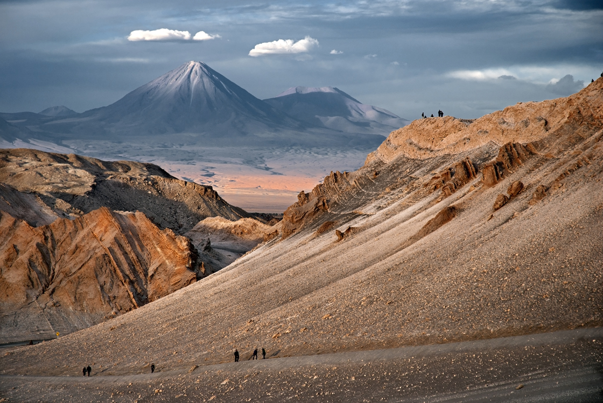

|
jkh
Фенеки
Гуанако
|
Животный мир пустыни Атакама

Уникальное место
Пустыня Атакама действительно известна своей уникальностью. Мало того, что эта пустыня одно из самых засушливых мест на нашей планете
(осадков здесь, кроме тумана, не наблюдалось более 400 лет), так она еще и самая высокогорная. (более 4000 м. над уровнем моря). Казалось бы, кто вообще способен
выжить в таких условиях, да еще если учитывать просто невероятные перепады температур ежедневно?
Однако животные здесь все-таки обитают, и имеют особенности, не свойственные больше ни одним из видов, когда-либо живших на Земле.
|